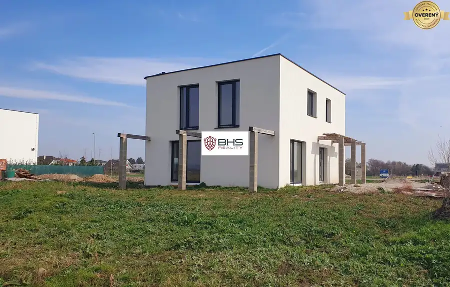
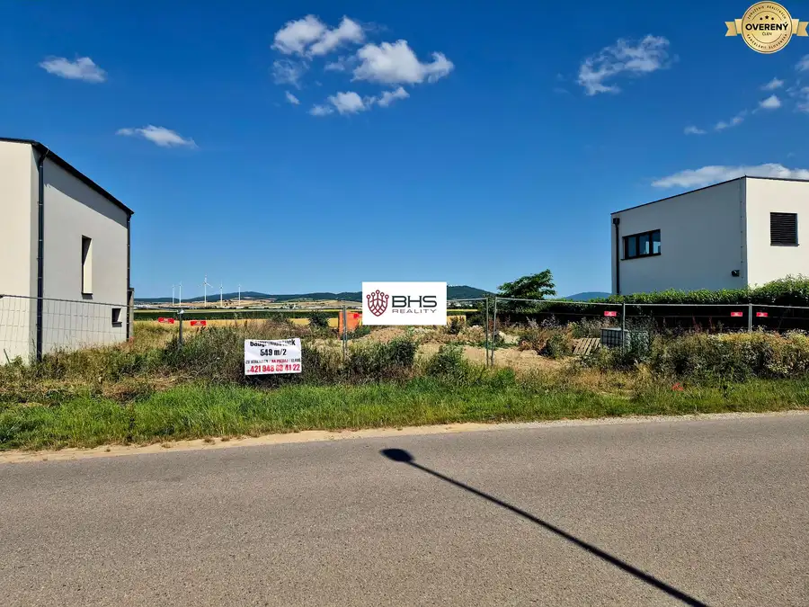

Na predaj 3i byt, Mýto pod Ďumbierom
Mýto pod Ďumbierom
- Dispozícia3-izbový
- Plocha58 m²
- Poschodie0. z 2
- Stavúplne prerobený
- Energetická triedaA
O nehnuteľnosti
BHS Reality Vám ponúkam na predaj trojizbový investičný apartmán v novovzniknutom rezorte Mýto Apartments.
Rezort sa nachádza v Nízkych Tatrách, na okraji malebnej horskej dedinky Mýto pod Ďumbierom.
Ideálny pre tých, ktorí hľadajú pokojné prostredie v srdci Nízkych Tatier. Apartmán sa nachádza v novostavbe s vynikajúcim prístupom k lyžiarskym strediskám, turistickým trasám a ďalším atrakciám, ktoré táto krásna lokalita ponúka.
Byt má rozlohu 58 m2, je dvojpodlažný, má jedno nadzemné podlažie a jedno podkrovné podlažie, dispozične pozostáva z troch obytných miestností a príslušenstva. Apartmánový dom, v ktorom sa daná nehnuteľnosť nachádza bol daný do užívania v r. 2020.
Apartmán sa predáva čiastočne zariadený, po dohode s majiteľom.
K apartmánu prislúcha vonkajšie parkovacie státie, ktoré je zabezpečené kamerovým systémom a vstup je cez bezpečnostnú rampu.
Lokalita: Mýto pod Ďumbierom je obľúbená turistická destinácia, ktorá ponúka množstvo aktivít po celý rok. V zimných mesiacoch môžete využiť lyžiarske strediská v okolí (napr. Ski centrum Mýto), v lete zase nádherné turistické a cyklistické trasy vedúce priamo do Nízkych Tatier.
Okolie je ideálne aj pre rodinné výlety alebo relaxáciu v prírode.
V obci sú k dispozícii základné služby, obchody, reštaurácie a kaviarne.
Ďalšia infraštruktúra a mestské služby sú dostupné v neďalekom meste Brezno, ktoré je vzdialené len pár kilometrov.
Parametre
| Celková rozloha | 58 m² |
|---|---|
| Úžitková plocha | 58 m² |
| Poschodie | prízemie |
| Počet poschodí | 2 |
| Počet izieb | 3 |
| Stav | úplne prerobený |
| Internet | lokálny poskytovateľ |
| Kúpeľňa | áno |
| Postavené z | tehla |
| Zariadenie | zariadený |
| Zateplený objekt | áno |
| Energetický certifikát | A |
| Novostavba | áno |
| Dátum zverejnenia | 11. 6. 2026 |
Kde to je
Mohlo by Vás zaujímať

Rodinné domy10 405 000 €Novostavba 5i rodinného domu za skvelú cenu v Kittsee Kittsee 5-izbový139 m² BHS Reality ponúka exkluzívne na predaj práve dokončenú nízkoenergetickú novostavbu rodinného domu v Rakúsku. Ide o 5-izbový, samostatne stojaci,…
Pozemok2 164 000 €Predaj - stavebný pozemok s krásnym výhľadom, 549 m2, Kittsee Hainburg an der Donau, Kittsee 549 m² Rozmery pozemku 29,65m x 18,69m. Inžinierske siete sú k dispozícii. Možnosť postaviť jedno alebo dvojpodlažný rodinný dom. Stavebná smernica povoľuje…